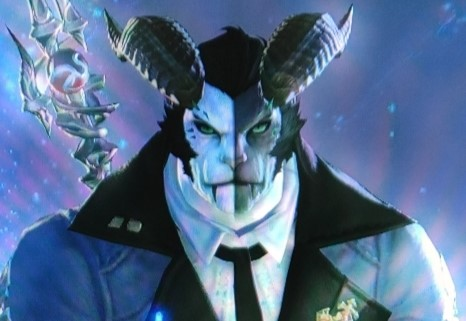
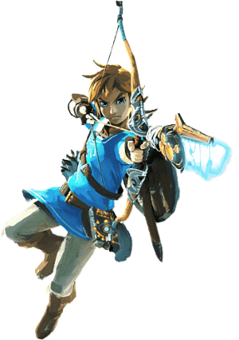
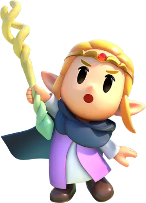
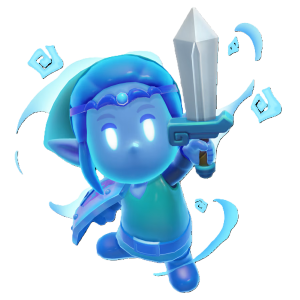
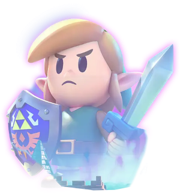
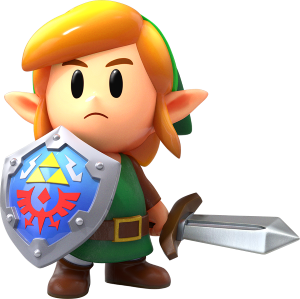
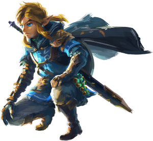
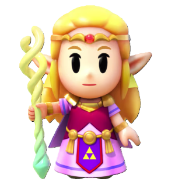

Warframe is a Massively Multiplayer Online Third Person Shooter developed by Digital Extremes (DE). Warframe has actually been around for 11 years now, DE just celebrated their 11th anniversary at TennoCon 2024 in the beginning of August. I have been playing this game lately on my PC, or on the Nintendo Switch when I'm not at my desk. I love playing it when I want some down time to just relax while shooting or slicing enemies. So far, they have created 57 “Frames” that you can control with a character called a Tenno, with 43 of them also having what they call a Prime version, with flashy gold pieces, which is usually a much better frame to use in the missions. We are the Tenno in the game, controlling the Frames in battles or missions. They have a rich storyline that has been progressing for years now, and they are adding a new free expansion to the game that takes you back to when the Tenno and Warframes did not exist yet, which DE is calling Warframe 1999. Here are some of my favorite Warframes I choose to play with:
Star Wars: Hunters is an off-shoot game developed by Natural Motion Games and published by Zynga. SW: Hunters pits four players against four other players online to win a match in multiple random arena levels. It’s my go-to game when chilling in between work and school lately. I can play Star Wars: Hunters on my phone, iPad or the Switch whenever I have wi-fi available. You can choose from many different types of Hunters, each with a different play style, weapons and abilities called Ultimates. There are currently 14 Hunters at this time, with a new one you can purchase each season, which lasts a few months. It basically plays like a Star Wars inspired OverWatch 2 game. I prefer playing damage dealers like Imara Vex, a bounty hunter, and Rieve, a dark side assassin. I have both of them already maxed out in level since I like playing as them so much. You can customize their costumes, weapon skins, victory poses and stickers to portray emotions during the matches.
Starfield was the first brand new IP developed, in 25 years, by Bethesda Game Studios, which was released last year on September 6th, 2023. Many people compared it to “Skyrim in Space”, after the game director Todd Howard called it that when it was announced back in 2018. Starfield is an Action Role Playing Game, or ARPG, just like the other games Bethesda makes, like Fallout 4 and Elder Scrolls V: Skyrim. Also like those other games, you can switch between a first person and third person view while playing. It is really fun to go to different planets and find resources and the mysterious artifacts you need to finish the game. You can actually go to over 1000 planets, moons and space stations and many of the landscapes are procedurally generated. Unfortunately, I haven’t been able to actually play much of the game lately, as I just bought it recently on Steam. I last got to play Starfield when I previously played it through the Xbox Game Pass Ultimate subscription on my PC when it came out last year.
Doom Eternal (PC)
Doom Eternal is a great game that came out at just the right time back in 2020, right at the start of the pandemic of Covid-19, alongside Nintendo’s Animal Crossing: New Horizons. It was developed by id Software, and published by Bethesda Softworks on March 20th, 2020. Doom Eternal follows the Doom Slayer, fourteen years after the events of the Doom reboot from 2016, which I completed a few months ago myself. You play as the Doom Slayer, coming back to Earth after it’s ravaged by demons from Hell, you then rip and tear through them as you force your way to the big bosses to finish the game, and have lots of cut-scenes and flashbacks to watch in between missions. There is even a new Fortress of Doom, floating in space above Earth in Doom Eternal. I haven’t completed Doom Eternal since I finished Doom (2016) a few months ago, but I will finish it someday. This is actually the seventh Doom game in the main DOOM series. In fact, the original DOOM game from 1993, still has new levels being created for it, and was re-released as DOOM + DOOM II bundled together, with a bunch of extras and brand new levels. It just goes to show that classics like this never really die out.

Horizon Zero Dawn (PC and PS4)
Horizon Zero Dawn is an action role-playing game that was developed by Guerilla Games and published by Sony Interactive Entertainment in 2017 for the Playstation 4, then released on PC in 2020. Horizon Zero Dawn follows a young hunter by the name of Aloy, who sets out to uncover her past while fighting off mechanical creatures in a post-apocalyptic, 31st century Earth. I had first played Horizon Zero Dawn on the PS4 back around the time it was released, or at some time after. I purchased the Steam version for PC a few years ago so I could use Nexus Mods to make it funner while playing. It’s really great using the Bow with different arrow types to strike at these robot animals that roam the world, all around you. Aloy also uses a techno spear that has one pointed end and the other end can be used to actually take control of the robots, getting stronger and allowing more types to be controlled as you play along the storyline. I still haven’t finished this game yet either, but I do plan to get on that once I’m done playing other games first, and not finishing them either yet. Horizon Zero Dawn is a great game, along with its sequel Horizon Forbidden West. There is also a Horizon VR game on the Playstation VR2 through the PS5, and a LEGO Horizon Adventures game coming out this year on multiple consoles and PC
The Elder Scrolls V: Skyrim (PC)
The Elder Scrolls V: Skyrim, which I will just be calling Skyrim, is an action role-playing game developed by Bethesda Game Studios in 2011 originally. Skyrim has been re-released as a Legendary Edition, a Special Edition and an Anniversary Edition since its original release throughout the years. I personally have bought many versions of Skyrim over the years, each one of them still as fun as the last time, as they add more features and quests to play through. When you start Skyrim, you play as a Dragonborn, who must choose sides between two warring factions, the Imperials and the Stormcloaks, led by Ulfric Stormcloak. Along the way, you find companions to help you, and other NPCs to give you information about the world. You can get married and adopt children in the game, and also decorate a house or five if you want to, all over the map of Skyrim. When I do play Skyrim, I’m usually using mods from Nexus Mods, which has like 1000’s of mods for any version of Skyrim available. Since this is the third action role-playing game on this list, it really must be my favorite genre of video games around, also adventure games, which are very similar anyways.
Hyrule Royal Family Crest
The Legend of Zelda Games
The Legend of Zelda, the first game of the series, was first released in Japan on February 21, 1986, on the Famicom Disk System. A cartridge version for the Nintendo Entertainment System, using battery-backed memory, was released in the United States on August 22, 1987, and in Europe on November 27, 1987. There are currently 20 mainline games in the series, with many spin-off happening throughout the years. Some of the latest releases are as follows:
Breath of the Wild

The Legend of Zelda: Breath of the Wild was released on March 3rd, 2017 for both the Nintendo Wii U and Switch consoles.
Princess Zelda

Swordfighter Zelda

Swordfighter Link

Link's Awakening: HD Remake

The Legend of Zelda: Link's Awakening: HD Remake was released on September 20th, 2019 for the Nintendo Switch console. This is the only game in the series that had two remakes with added features in both.
Tears of the Kingdom

The Legend of Zelda: Tears of the Kingdom was released on May 12th, 2023 for the Nintendo Switch console.
Echoes of Wisdom

The Legend of Zelda: Echoes of Wisdom was released on September 26th, 2024 for the Nintendo Switch console.
All Mainline Zelda Games: The Legend of Zelda - NES 1986,
Zelda II: The Adventure of Link - NES 1987,
A Link to the Past - SNES 1991,
Link's Awakening - GB 1993,
Ocarina of Time - N64 1998,
Link's Awakening DX - GBC 1998,
Majora's Mask - N64 2000,
Oracle of Seasons/Oracle of Ages - GBC 2001,
Four Swords - GBA 2002,
The Wind Waker - GCN 2002,
Four Swords Adventures - GCN 2004,
The Minish Cap - GBA 2004,
Twilight Princess - GCN/Wii 2006,
Phantom Hourglass - NDS 2007,
Spirit Tracks - NDS 2009,
Ocarina of Time 3D - 3DS 2011,
Skyward Sword - Wii 2011,
The Wind Waker HD - Wii U 2013,
A Link Between Worlds - 3DS 2013,
Majora's Mask 3D - 3DS 2015,
Tri Force Heroes - 3DS 2015,
Twilight Princess HD - Wii U 2016,
Breath of the Wild - Wii U/Switch 2017,
Link's Awakening HD Remake - Switch 2019,
Skyward Sword HD - Switch 2021,
Tears of the Kingdom - Switch 2023,
Echoes of Wisdom - Switch 2024.